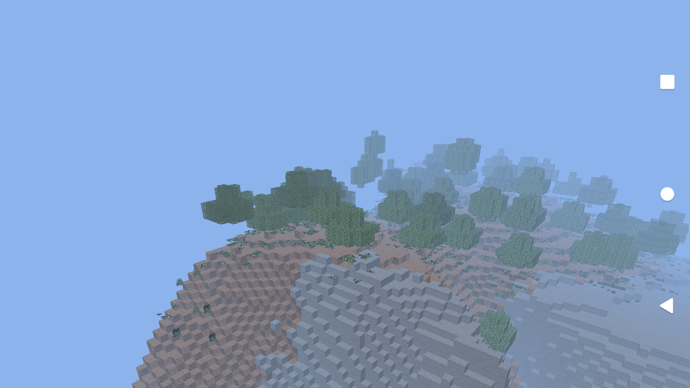
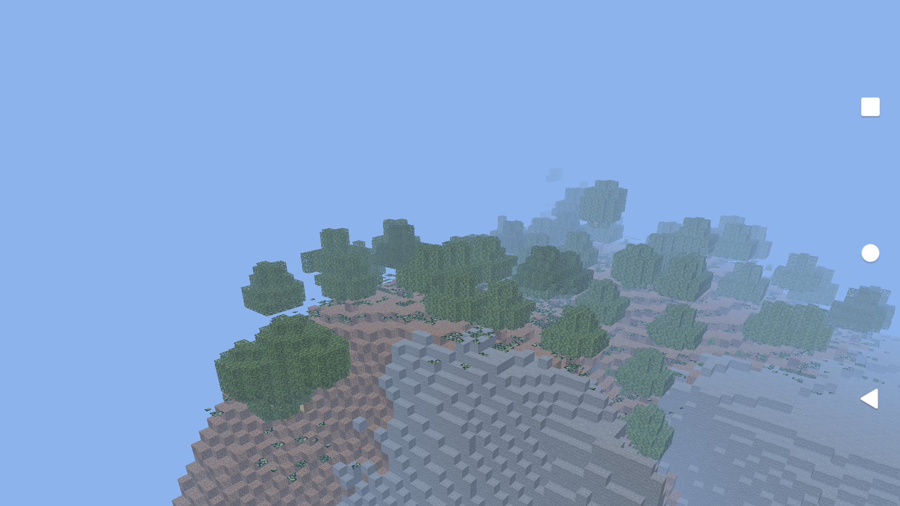

Umbra 0.3.10 — the gallery
Two fixed poses in a real save, overlay off, taken on the CI
emulator by the app itself. Tap a picture for the full-size PNG.

hills — grassy hills, from the highest ground in the save
64c98a41 · 1327 KB

hills — grassy hills, from the highest ground in the save
e8479fdc · 1349 KB